Last updated: 2023-08-22
Checks: 6 1
Knit directory:
SMART-CARE_LungCancer_MethodDev/
This reproducible R Markdown analysis was created with workflowr (version 1.7.0). The Checks tab describes the reproducibility checks that were applied when the results were created. The Past versions tab lists the development history.
Great! Since the R Markdown file has been committed to the Git repository, you know the exact version of the code that produced these results.
Great job! The global environment was empty. Objects defined in the global environment can affect the analysis in your R Markdown file in unknown ways. For reproduciblity it’s best to always run the code in an empty environment.
The command set.seed(20230425) was run prior to running
the code in the R Markdown file. Setting a seed ensures that any results
that rely on randomness, e.g. subsampling or permutations, are
reproducible.
Great job! Recording the operating system, R version, and package versions is critical for reproducibility.
Nice! There were no cached chunks for this analysis, so you can be confident that you successfully produced the results during this run.
Using absolute paths to the files within your workflowr project makes it difficult for you and others to run your code on a different machine. Change the absolute path(s) below to the suggested relative path(s) to make your code more reproducible.
| absolute | relative |
|---|---|
| /Users/qianwu/Desktop/SMART-CARE_LungCancer_MethodDev | . |
Great! You are using Git for version control. Tracking code development and connecting the code version to the results is critical for reproducibility.
The results in this page were generated with repository version 717cb23. See the Past versions tab to see a history of the changes made to the R Markdown and HTML files.
Note that you need to be careful to ensure that all relevant files for
the analysis have been committed to Git prior to generating the results
(you can use wflow_publish or
wflow_git_commit). workflowr only checks the R Markdown
file, but you know if there are other scripts or data files that it
depends on. Below is the status of the Git repository when the results
were generated:
Ignored files:
Ignored: .DS_Store
Ignored: .RData
Ignored: .Rhistory
Ignored: analysis/.DS_Store
Ignored: code/.DS_Store
Ignored: data/.DS_Store
Ignored: output/.DS_Store
Untracked files:
Untracked: analysis/feature_selection.Rmd
Untracked: analysis/mofa_downstream_analysis.Rmd
Untracked: code/Junyan/
Untracked: code/about.Rmd
Untracked: code/dataset_list.R
Untracked: code/feature_selection_old.Rmd
Untracked: code/license.Rmd
Untracked: code/mofa_downstream_analysis.Rmd
Untracked: code/mofa_factors_investigation.Rmd
Untracked: code/mofa_varied_omics_combinations.Rmd
Untracked: code/workflowr_commands.R
Untracked: data/AG_Hell/
Untracked: data/AG_Hopf/
Untracked: data/AG_Klingmuller/
Untracked: data/AG_Krijgsveld/
Untracked: data/MethodDev_LungCancer_Datasets.RData
Untracked: data/mofa/
Untracked: data/patient_metadata.tsv
Untracked: data/rf/
Untracked: data/stats/
Untracked: output/TAC_2023/
Untracked: output/YIG_seminar/
Untracked: output/preliminary_analysis_untargeted.html
Unstaged changes:
Deleted: analysis/mofa_varied_omics_combinations.Rmd
Note that any generated files, e.g. HTML, png, CSS, etc., are not included in this status report because it is ok for generated content to have uncommitted changes.
These are the previous versions of the repository in which changes were
made to the R Markdown (analysis/preprocessing_DIA.Rmd) and
HTML (docs/preprocessing_DIA.html) files. If you’ve
configured a remote Git repository (see ?wflow_git_remote),
click on the hyperlinks in the table below to view the files as they
were in that past version.
| File | Version | Author | Date | Message |
|---|---|---|---|---|
| Rmd | 9a0840b | LiaoQianWu | 2023-08-04 | Redo feature filtering for DIA proteomics and rerun subsequent analyses |
| Rmd | 1a03bdb | LiaoQianWu | 2023-07-27 | Preprocess new DIA plasma and tissue proteomics from AG Krijgsveld |
| html | 128dd12 | LiaoQianWu | 2023-07-14 | Build site. |
| Rmd | 4d5db4a | LiaoQianWu | 2023-07-14 | Reanalyze filtered untargeted metabolomics and lipidomics with PPCA and additional patient metadata |
| html | 389d24e | LiaoQianWu | 2023-06-28 | Build site. |
| Rmd | b083640 | LiaoQianWu | 2023-06-27 | Preprocess DIA tissue proteomics from AG Klingmüller and compare it with DIA and DDA data from AG Krijgsveld |
| html | 5c9ec0b | LiaoQianWu | 2023-06-07 | Build site. |
| Rmd | 3959bda | LiaoQianWu | 2023-06-07 | Filter out features with massive missingness and run PPCA instead of conventional PCA |
| html | 3959bda | LiaoQianWu | 2023-06-07 | Filter out features with massive missingness and run PPCA instead of conventional PCA |
| Rmd | 94ca338 | LiaoQianWu | 2023-05-25 | Add patient metadata, age of diagnosis, into SE objects |
| Rmd | a8193d9 | LiaoQianWu | 2023-05-17 | Add patient metadata information (gender, smoking, stage) into SE objects |
| html | 2f62f8a | LiaoQianWu | 2023-05-17 | Build site. |
| Rmd | 067f268 | LiaoQianWu | 2023-05-17 | Publish initial DIA proteomics preprocessing and single-omics analysis |
| Rmd | 5c0f19e | LiaoQianWu | 2023-05-03 | Add visualization of missing data in preprocessing_DIA.Rmd and amend typo in preliminary_analysis_untargeted.Rmd |
| Rmd | be9b101 | LiaoQianWu | 2023-05-02 | Finish preprocessing of DIA proteomics |
Description: Preprocess Plasma and Tissue DIA
Proteomics generated by Karim Aljakouch from AG Krijgsveld, simply
including data cleansing and data normalization (VSN). All needed
information of each dataset (2 in total) was then stored in
SummarizedExperiment objects for further analyses.
Q: All samples from Patient N02PM0LW, FH49U7TY, and F04ERF3M are
missing? A: They were dropped out from study.
Update: Remove features quantified in less than 2/3 of samples in all
sample groups of interest before conducting VSN.
Update2: Preprocess Tissue DIA Proteomics generated by AG
Klingmüller.
Q: Samples from Patient D04XHF7F (P05) and E04NMF53 (P19) are
missing?
Update3: Modify feature filtering criterion: Remove features quantified in less than 2/3 of samples to avoid analysis results that one subgroup is fully missing since we got a great deal of significant cancer recurrence-related features.
Load libraries
library('readr')
library('readxl')
library('vsn')
library('visdat')
library('SummarizedExperiment')
library('tidyverse')
# Load user-defined functions
source('./code/misc.R')
# Set plot theme
th <- theme_bw(base_size = 15) +
theme(axis.title = element_text(face = 'bold'),
axis.text = element_text(face = 'bold'),
axis.ticks = element_line(linewidth = 0.8),
legend.text = element_text(size = 15))
# List sample annotations to keep in SE objects
anno <- c('Condition', 'Patient', 'Recurrence', 'Gender', 'Age', 'Smoking',
'Stage', 'Identifier')# Load unprocessed data
proPlasmaTab <- readr::read_tsv('./data/AG_Krijgsveld/20230104_MarcS_Method_Estab_Plasma.pg_matrix.tsv') %>%
dplyr::select(-c(Protein.Ids, First.Protein.Description)) %>%
tidyr::pivot_longer(cols = -c('Protein.Group', 'Protein.Names', 'Genes'),
names_to = 'Identifier',
values_to = 'Abundance') %>%
dplyr::mutate(Protein.Names = stringr::str_remove_all(Protein.Names, '_HUMAN'),
Identifier = stringr::str_remove_all(Identifier, 'D:.*oecf4.*Exploris_|_4\\.raw'))
# Load sample metadata from preprocessed Targeted Metabolomics SE object
smpAnno <- colData(readRDS('./data/AG_Hell/metaPlasmaNorm.rds')) %>%
tibble::as_tibble(rownames = 'Sample') %>%
dplyr::mutate(Identifier = stringr::str_remove(Identifier, '_3$'),
TimePoint = dplyr::case_when(Condition == 'Baseline' ~ 'Bseline',
Condition != 'Baseline' ~ '2 years later'))
# Combine all information into a table
proPlasmaTab <- dplyr::left_join(proPlasmaTab, smpAnno, by = 'Identifier')
# Convert long data to SE object (wide data)
proPlasma <- df2SummExp(proPlasmaTab, row_id = 'Protein.Group', col_id = 'Sample',
values = 'Abundance', row_anno = c('Protein.Names', 'Genes'),
col_anno = anno)Display dimensions of data (34 samples and 505 features)
dim(proPlasma)[1] 505 34Display data missingness
exprMat <- SummarizedExperiment::assay(proPlasma)
visdat::vis_miss(exprMat, cluster = T, sort_miss = T) +
labs(y = 'Features') +
theme(axis.text.x = element_text(angle = 90, vjust = 0.5, hjust = 0, size = 11, face = 'bold'),
axis.text.y = element_blank(),
axis.title.y = element_text(size = 13, face = 'bold'),
legend.text = element_text(size = 12, face = 'bold'))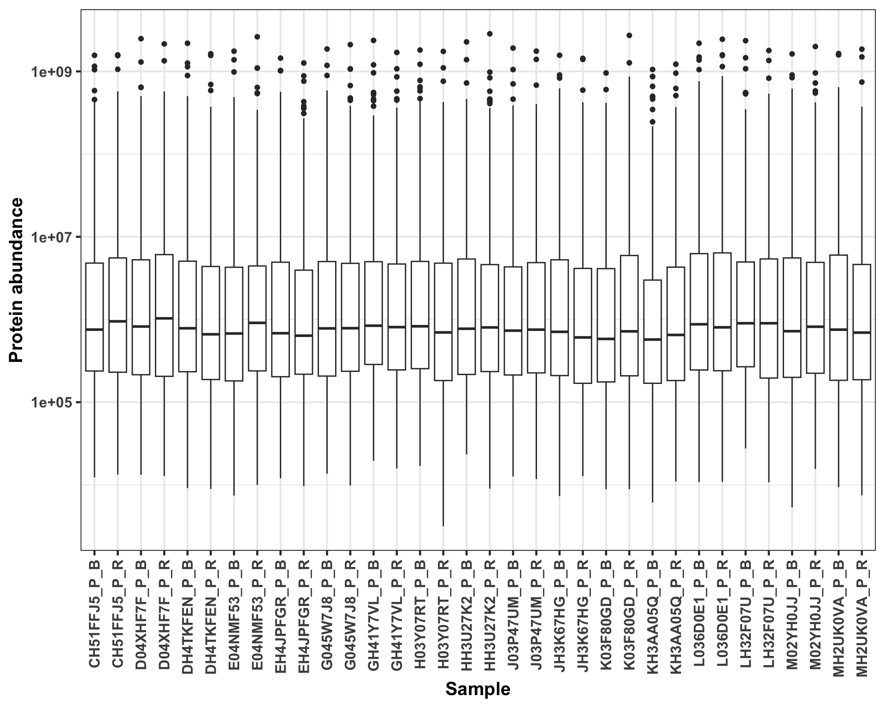
Display distribution of original data
ggplot(proPlasmaTab, aes(x=Sample, y=Abundance)) +
geom_boxplot() +
scale_y_log10() +
labs(y = 'Protein abundance') +
th + theme(axis.text.x = element_text(angle = 90, vjust = 0.5, hjust = 1))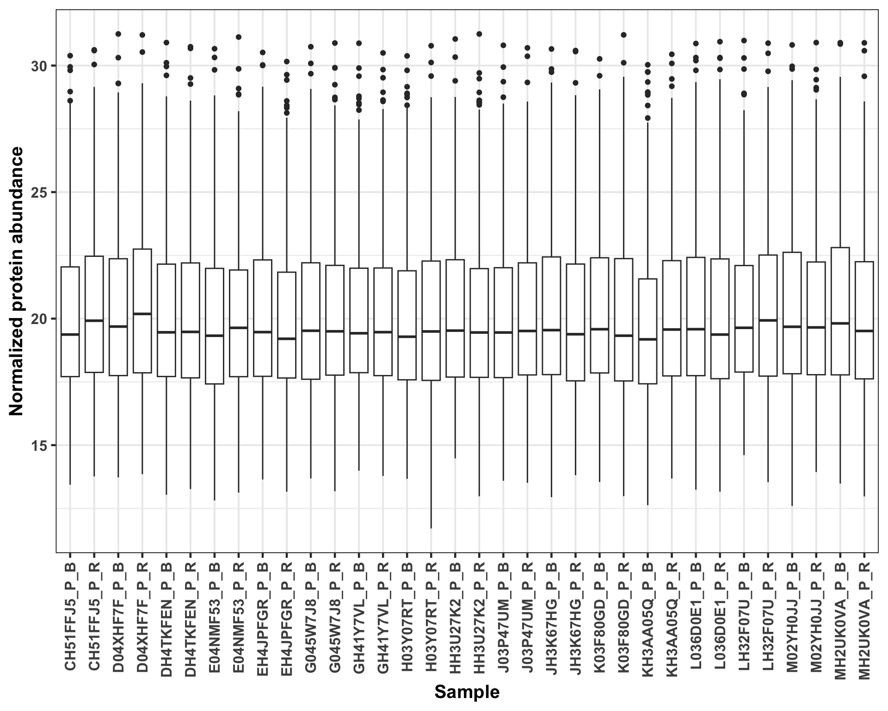
Remove features quantified in less than 2/3 of samples for more reliable data normalization
# Remove features quantified in less than 2/3 of samples
rmFeats <- dplyr::group_by(proPlasmaTab, Protein.Group) %>%
# Compute proportion of observed data points of each group
dplyr::summarise(frac_nonNA = round(sum(!is.na(Abundance)) / length(Abundance), 2)) %>%
dplyr::ungroup() %>%
# Keep proteins observed in less than 2/3 of samples of groups
dplyr::filter(frac_nonNA < 0.67) %>%
dplyr::pull(Protein.Group)
proPlasmaTab <- dplyr::filter(proPlasmaTab, !Protein.Group %in% rmFeats)
# Convert long data to SE object
proPlasma <- df2SummExp(proPlasmaTab, row_id = 'Protein.Group', col_id = 'Sample',
values = 'Abundance', row_anno = c('Protein.Names', 'Genes'),
col_anno = anno)# Remove features quantified in less than 2/3 of samples in all four sample groups
# of interest (Baseline/Follow-up Recurrence/Non-recurrence) for more reliable data normalization\
# Missing data is more likely to happen in proteins with small abundances due to detection
# limit. Image comparison between two sample groups, certain proteins are highly missing
# in one group and present in the other
# Remove features quantified in less than 2/3 of samples in all sample groups of interest
# Grouping like this since Baseline and Follow-up samples will be analyzed separately
rmFeats <- dplyr::group_by(proPlasmaTab, Protein.Group, TimePoint, Recurrence) %>%
# Compute proportion of observed data points of each group
dplyr::summarise(frac_nonNA = round(sum(!is.na(Abundance)) / length(Abundance), 2)) %>%
dplyr::ungroup() %>%
# Keep proteins observed in less than 2/3 of samples of groups
dplyr::filter(frac_nonNA < 0.67) %>%
dplyr::group_by(Protein.Group) %>%
dplyr::summarise(Count = length(Protein.Group)) %>%
# Keep proteins observed in less than 2/3 of samples of all groups
dplyr::filter(Count == 4) %>%
dplyr::pull(Protein.Group)
proPlasmaTab <- dplyr::filter(proPlasmaTab, !Protein.Group %in% rmFeats)
# Convert long data to SE object
proPlasma <- df2SummExp(proPlasmaTab, row_id = 'Protein.Group', col_id = 'Sample',
values = 'Abundance', row_anno = c('Protein.Names', 'Genes'),
col_anno = anno)
# Got 445 features after filteringDisplay dimensions of filtered data (34 samples and 421 features)
dim(proPlasma)[1] 421 34Display data missingness
exprMat <- SummarizedExperiment::assay(proPlasma)
visdat::vis_miss(exprMat, cluster = T, sort_miss = T) +
labs(y = 'Features') +
theme(axis.text.x = element_text(angle = 90, vjust = 0.5, hjust = 0, size = 11, face = 'bold'),
axis.text.y = element_blank(),
axis.title.y = element_text(size = 13, face = 'bold'),
legend.text = element_text(size = 12, face = 'bold'))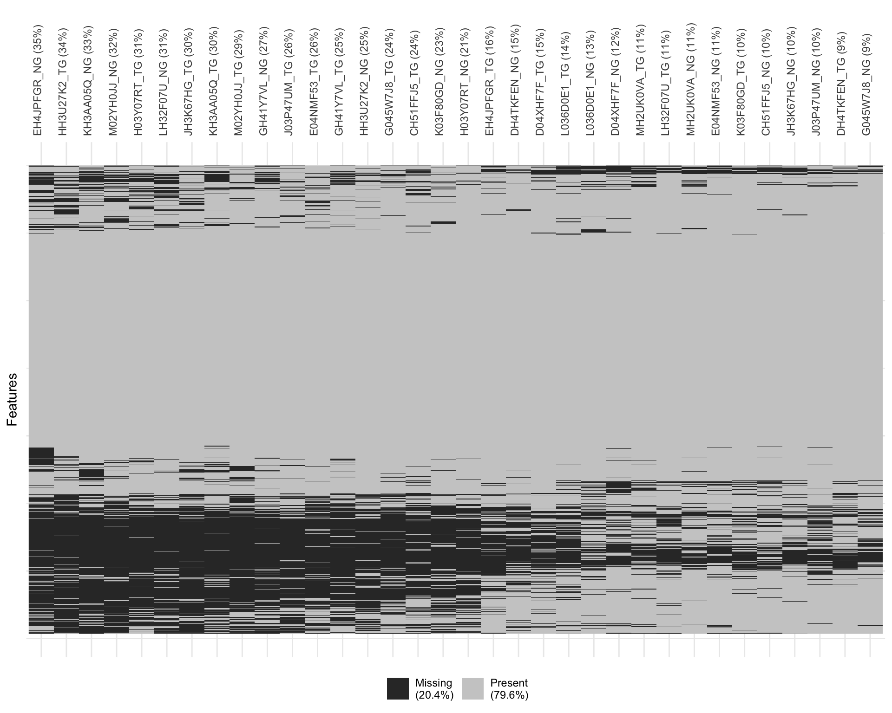
Display distribution of filtered data
ggplot(proPlasmaTab, aes(x=Sample, y=Abundance)) +
geom_boxplot() +
scale_y_log10() +
labs(y = 'Protein abundance') +
th + theme(axis.text.x = element_text(angle = 90, vjust = 0.5, hjust = 1))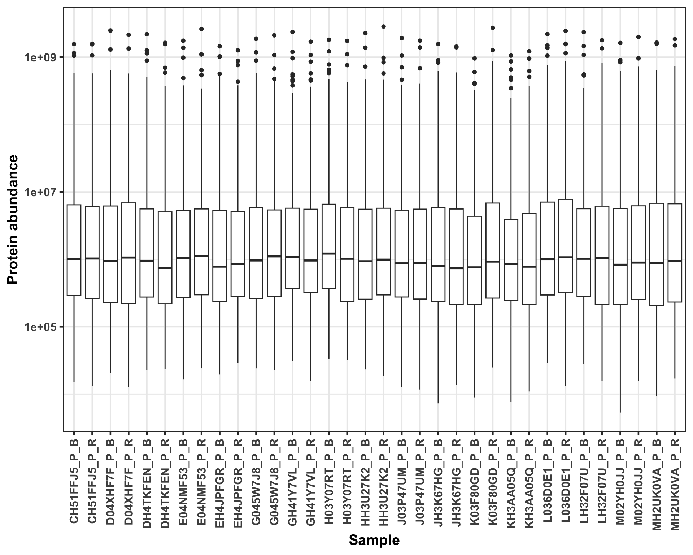
| Version | Author | Date |
|---|---|---|
| 389d24e | LiaoQianWu | 2023-06-28 |
Perform VSN and display distribution of normalized data
# Perform VSN
exprMat <- as.matrix(SummarizedExperiment::assay(proPlasma))
fit <- vsnMatrix(exprMat)
proPlasmaNorm <- proPlasma
SummarizedExperiment::assay(proPlasmaNorm) <- predict(fit, exprMat)
# Save normalized data
# saveRDS(proPlasmaNorm, './data/AG_Krijgsveld/proPlasmaNorm_DIA.rds')
# Convert SE object to long data for plotting
proPlasmaTabNorm <- summExp2df(proPlasmaNorm, assay = 'Abundance',
row_id = 'Protein.Group', col_id = 'Sample')
ggplot(proPlasmaTabNorm, aes(x=Sample, y=Value)) +
geom_boxplot() +
labs(y = 'Normalized protein abundance') +
th + theme(axis.text.x = element_text(angle = 90, vjust = 0.5, hjust = 1))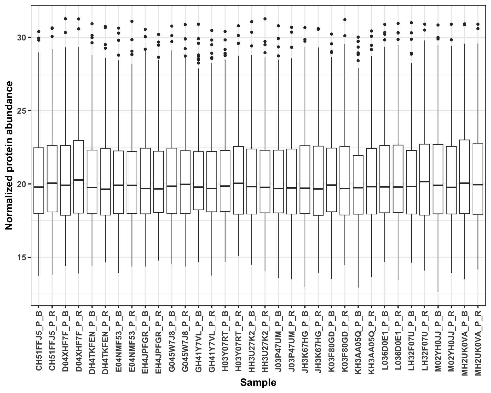
# Store median normalized data for computing log2(FC)
exprMat <- as.matrix(assay(proPlasma))
sampleAnno <- tibble::as_tibble(colData(proPlasma), rownames = 'Sample')
featAnno <- tibble::as_tibble(rowData(proPlasma), rownames = 'Feature')
proPlasmaMediTab <- limma::normalizeBetweenArrays(exprMat, method = 'scale') %>%
tibble::as_tibble(rownames = 'Feature') %>%
tidyr::pivot_longer(cols = -'Feature',
names_to = 'Sample',
values_to = 'mediAbundance') %>%
dplyr::mutate(mediAbundance = log2(mediAbundance)) %>%
dplyr::left_join(sampleAnno, by = 'Sample') %>%
dplyr::left_join(featAnno, by = 'Feature')
ggplot(proPlasmaMediTab, aes(x=Sample, y=mediAbundance)) +
geom_boxplot() +
th + theme(axis.text.x = element_text(angle = 90, vjust = 0.5, hjust = 1))
proPlasmaMedi <- df2SummExp(proPlasmaMediTab, row_id = 'Feature', col_id = 'Sample',
values = 'mediAbundance', row_anno = c('Protein.Names', 'Genes'),
col_anno = anno)
# saveRDS(proPlasmaMedi, './data/AG_Krijgsveld/proPlasmaMedi_DIA.rds')# Load unprocessed data
proTissueTab <- readr::read_tsv('./data/AG_Krijgsveld/20230104_MarcS_Method_Estab_Tissue.pg_matrix.tsv') %>%
dplyr::select(-c(Protein.Ids, First.Protein.Description)) %>%
tidyr::pivot_longer(cols = -c('Protein.Group', 'Protein.Names', 'Genes'),
names_to = 'Identifier',
values_to = 'Abundance') %>%
dplyr::mutate(Protein.Names = stringr::str_remove_all(Protein.Names, '_HUMAN'),
Identifier = stringr::str_remove_all(Identifier, 'D:.*oecf4.*Exploris_|_4\\.raw'))
# Load sample metadata from preprocessed Targeted Metabolomics SE object
smpAnno <- colData(readRDS('./data/AG_Hell/metaTissueNorm.rds')) %>%
tibble::as_tibble(rownames = 'Sample') %>%
dplyr::mutate(Identifier = stringr::str_remove(Identifier, '_3$'))
# Combine all information into a table
proTissueTab <- dplyr::left_join(proTissueTab, smpAnno, by = 'Identifier')
# Convert long data to SE object (wide data)
proTissue <- df2SummExp(proTissueTab, row_id = 'Protein.Group', col_id = 'Sample',
values = 'Abundance', row_anno = c('Protein.Names', 'Genes'),
col_anno = anno)Display dimensions of data (34 samples and 6929 features)
dim(proTissue)[1] 6929 34Display data missingness
exprMat <- SummarizedExperiment::assay(proTissue)
visdat::vis_miss(exprMat, cluster = T, sort_miss = T) +
labs(y = 'Features') +
theme(axis.text.x = element_text(angle = 90, vjust = 0.5, hjust = 0, size = 11, face = 'bold'),
axis.text.y = element_blank(),
axis.title.y = element_text(size = 13, face = 'bold'),
legend.text = element_text(size = 12, face = 'bold'))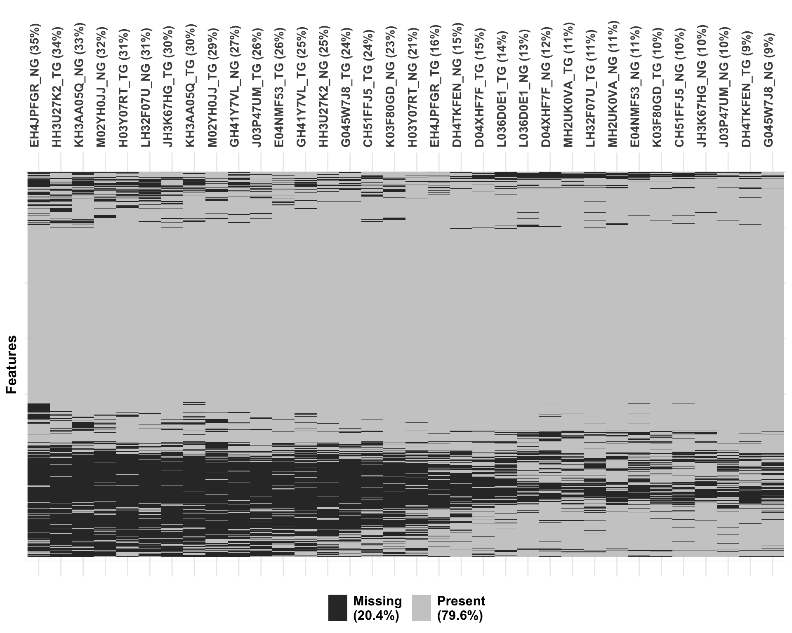
Display distribution of original data
ggplot(proTissueTab, aes(x=Sample, y=Abundance)) +
geom_boxplot() +
scale_y_log10() +
labs(y = 'Protein abundance') +
th + theme(axis.text.x = element_text(angle = 90, vjust = 0.5, hjust = 1))
Remove features quantified in less than 2/3 of samples for more reliable data normalization
# Remove features quantified in less than 2/3 of samples
rmFeats <- dplyr::group_by(proTissueTab, Protein.Group) %>%
# Compute proportion of observed data points of each group
dplyr::summarise(frac_nonNA = round(sum(!is.na(Abundance)) / length(Abundance), 2)) %>%
dplyr::ungroup() %>%
# Keep proteins observed in less than 2/3 of samples of groups
dplyr::filter(frac_nonNA < 0.67) %>%
dplyr::pull(Protein.Group)
proTissueTab <- dplyr::filter(proTissueTab, !Protein.Group %in% rmFeats)
# Convert long data to SE object
proTissue <- df2SummExp(proTissueTab, row_id = 'Protein.Group', col_id = 'Sample',
values = 'Abundance', row_anno = c('Protein.Names', 'Genes'),
col_anno = anno)# Remove features quantified in less than 2/3 of samples in all four sample groups
# of interest (Normal/Tumor Recurrence/Non-recurrence) for more reliable data normalization
# Remove features quantified in less than 2/3 of samples in all sample groups of interest
rmFeats <- dplyr::group_by(proTissueTab, Protein.Group, Condition, Recurrence) %>%
dplyr::summarise(frac_nonNA = round(sum(!is.na(Abundance)) / length(Abundance), 2)) %>%
dplyr::ungroup() %>%
dplyr::filter(frac_nonNA < 0.67) %>%
dplyr::group_by(Protein.Group) %>%
dplyr::summarise(Count = length(Protein.Group)) %>%
dplyr::filter(Count == 4) %>%
dplyr::pull(Protein.Group)
proTissueTab <- dplyr::filter(proTissueTab, !Protein.Group %in% rmFeats)
# Convert long data to SE object
proTissue <- df2SummExp(proTissueTab, row_id = 'Protein.Group', col_id = 'Sample',
values = 'Abundance', row_anno = c('Protein.Names', 'Genes'),
col_anno = anno)
# Got 5658 features after filteringDisplay dimensions of filtered data (34 samples and 5057 features)
dim(proTissue)[1] 5057 34Display data missingness
exprMat <- SummarizedExperiment::assay(proTissue)
visdat::vis_miss(exprMat, cluster = T, sort_miss = T) +
labs(y = 'Features') +
theme(axis.text.x = element_text(angle = 90, vjust = 0.5, hjust = 0, size = 11, face = 'bold'),
axis.text.y = element_blank(),
axis.title.y = element_text(size = 13, face = 'bold'),
legend.text = element_text(size = 12, face = 'bold'))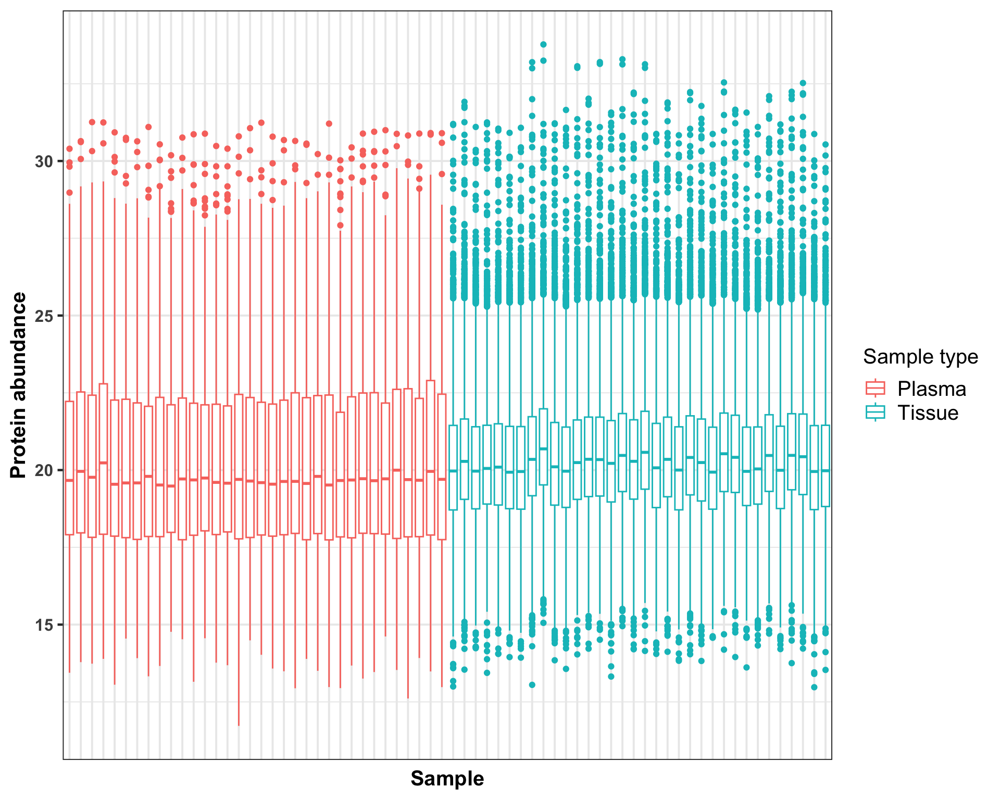
Display distribution of filtered data
ggplot(proTissueTab, aes(x=Sample, y=Abundance)) +
geom_boxplot() +
scale_y_log10() +
labs(y = 'Protein abundance') +
th + theme(axis.text.x = element_text(angle = 90, vjust = 0.5, hjust = 1))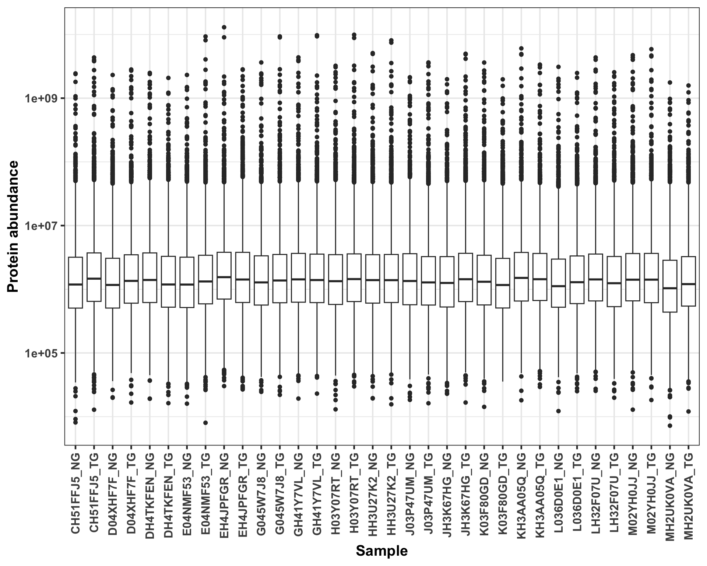
Perform VSN and display distribution of normalized data
# Perform VSN
exprMat <- as.matrix(SummarizedExperiment::assay(proTissue))
fit <- vsnMatrix(exprMat)
proTissueNorm <- proTissue
SummarizedExperiment::assay(proTissueNorm) <- predict(fit, exprMat)
# Save normalized data
# saveRDS(proTissueNorm, './data/AG_Krijgsveld/proTissueNorm_DIA.rds')
# Convert SE object to long data for plotting
proTissueTabNorm <- summExp2df(proTissueNorm, assay = 'Abundance',
row_id = 'Protein.Group', col_id = 'Sample')
ggplot(proTissueTabNorm, aes(x=Sample, y=Value)) +
geom_boxplot() +
labs(y = 'Normalized protein abundance') +
th + theme(axis.text.x = element_text(angle = 90, vjust = 0.5, hjust = 1))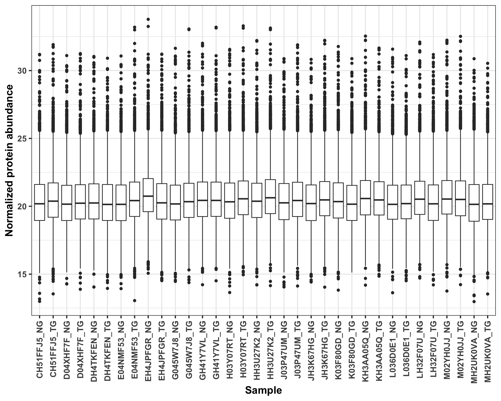
# Store median normalized data for computing log2(FC)
exprMat <- as.matrix(assay(proTissue))
sampleAnno <- tibble::as_tibble(colData(proTissue), rownames = 'Sample')
featAnno <- tibble::as_tibble(rowData(proTissue), rownames = 'Feature')
proTissueMediTab <- limma::normalizeBetweenArrays(exprMat, method = 'scale') %>%
tibble::as_tibble(rownames = 'Feature') %>%
tidyr::pivot_longer(cols = -'Feature',
names_to = 'Sample',
values_to = 'mediAbundance') %>%
dplyr::mutate(mediAbundance = log2(mediAbundance)) %>%
dplyr::left_join(sampleAnno, by = 'Sample') %>%
dplyr::left_join(featAnno, by = 'Feature')
ggplot(proTissueMediTab, aes(x=Sample, y=mediAbundance)) +
geom_boxplot() +
th + theme(axis.text.x = element_text(angle = 90, vjust = 0.5, hjust = 1))
proTissueMedi <- df2SummExp(proTissueMediTab, row_id = 'Feature', col_id = 'Sample',
values = 'mediAbundance', row_anno = c('Protein.Names', 'Genes'),
col_anno = anno)
# saveRDS(proTissueMedi, './data/AG_Krijgsveld/proTissueMedi_DIA.rds')# Load data
proTissueTab_Klin <- readr::read_tsv('./data/AG_Klingmuller/20230309_103228_SmartCare_TumorFree_Tumor_Yang001_Report.tsv') %>%
dplyr::select(-c(PG.ProteinDescriptions, contains('PG.NrOfPrecursorsIdentified'),
contains('PG.IBAQ'), contains('PG.IsIdentified'))) %>%
tidyr::pivot_longer(cols = -c('PG.ProteinGroups', 'PG.Genes'),
names_to = 'Experiment_ID',
values_to = 'Abundance') %>%
dplyr::mutate(Experiment_ID = stringr::str_remove_all(Experiment_ID, '\\[.*\\] |\\.PG\\.Quantity'),
Abundance = gsub(',', '\\.', Abundance),
Abundance = as.numeric(Abundance))
proTissueTab_Klin$Abundance[is.nan(proTissueTab_Klin$Abundance)] <- NA
# Load sample annotations
smpAnno <- readxl::read_excel('./data/AG_Klingmuller/230620_SMART-CARE_overview_OpenBIS_BH.xlsx') %>%
dplyr::rename(Sample = `Patient ID`, Identifier = `Aliquot ID`, Experiment_ID = `Experimental ID`,
Condition = `Tissue type`) %>%
dplyr::mutate(Condition = dplyr::case_when(Condition == 'Normal Tissue' ~ 'Normal',
Condition == 'Tumor Tissue' ~ 'Tumor'),
Sample = dplyr::case_when(Condition == 'Normal' ~ paste0(Sample, '_NG'),
Condition == 'Tumor' ~ paste0(Sample, '_TG')),
Patient = stringr::str_remove(Sample, '_.*$'),
Batch = dplyr::case_when(Batch == 'first' ~ '1', Batch == 'second' ~ '2'))
# Manually correct typo
smpAnno[which(smpAnno$Experiment_ID == 'Recurrence _TumorFree_P21'), 'Experiment_ID'] <- 'Recurrence_TumorFree_P21'
smpAnno[which(smpAnno$Experiment_ID == 'Recurrence _Tumor_P21'), 'Experiment_ID'] <- 'Recurrence_Tumor_P21'
# Load patient metadata
metadataTab <- readr::read_tsv('./data/patient_metadata.tsv') %>%
dplyr::select(Code, Gender, `Age at diagnosis`, `Smoking status`, `Pathological stage`,
`Adjuvant chemotherapy`) %>%
dplyr::rename(Patient = Code, Age = `Age at diagnosis`, Smoking = `Smoking status`,
Stage = `Pathological stage`, Adjuvant = `Adjuvant chemotherapy`) %>%
dplyr::filter(Patient %in% smpAnno$Patient) %>%
dplyr::mutate(Gender = dplyr::case_when(Gender == 'MALE' ~ 'Male',
Gender == 'FEMALE' ~ 'Female'),
Smoking = dplyr::case_when(Smoking == 'SMOKER' ~ 'Smoker',
Smoking == 'EX-SMOKER' ~ 'Ex-smoker',
Smoking == 'NON-SMOKER' ~ 'Non-smoker'))
# Retrieve patient recurrence information
recurAnno <- readxl::read_excel(
'./data/AG_Hell/Thorax cohort_not-normalized_subset plasma.xlsx', skip = 1) %>%
filter(!is.na(parents)) %>%
dplyr::select(c(Individual_ID, Status)) %>%
dplyr::rename(Patient = 'Individual_ID',
Condition = 'Status') %>%
dplyr::filter(Condition != 'BASELINE_SURGERY') %>%
dplyr::mutate(Recurrence = dplyr::case_when(
Condition == 'FOLLOW-UP' ~ 'No',
Condition == 'RECURRENCE' ~ 'Yes'
)) %>%
dplyr::select(-Condition)
# Combine all information into a table
smpAnno <- dplyr::left_join(smpAnno, metadataTab, by = 'Patient')
smpAnno <- dplyr::left_join(smpAnno, recurAnno, by = 'Patient')
proTissueTab_Klin <- dplyr::left_join(proTissueTab_Klin, smpAnno, by = 'Experiment_ID') %>%
dplyr::select(-Experiment_ID)
# Convert long data to SE object (wide data)
proTissue_Klin <- df2SummExp(proTissueTab_Klin, row_id = 'PG.ProteinGroups', col_id = 'Sample',
values = 'Abundance', row_anno = c('PG.Genes'),
col_anno = c(anno, 'Adjuvant', 'Batch'))Display dimensions of data (78 samples and 9659 features)
dim(proTissue_Klin)[1] 9659 78Display data missingness
exprMat <- SummarizedExperiment::assay(proTissue_Klin)
visdat::vis_miss(exprMat, cluster = T, sort_miss = T) +
labs(y = 'Features') +
theme(axis.text.x = element_text(angle = 90, vjust = 0.5, hjust = 0, size = 10, face = 'bold'),
axis.text.y = element_blank(),
axis.title.y = element_text(size = 13, face = 'bold'),
legend.text = element_text(size = 12, face = 'bold'))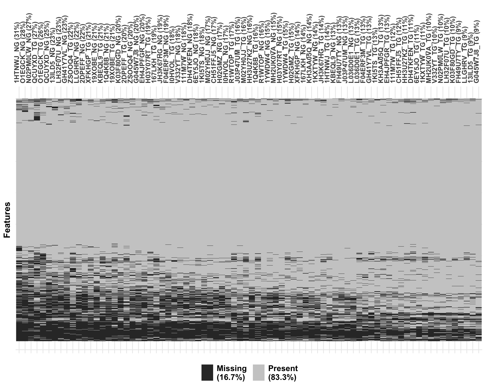
Display distribution of original data
ggplot(proTissueTab_Klin, aes(x=Sample, y=Abundance)) +
geom_boxplot() +
scale_y_log10() +
labs(y = 'Protein abundance') +
th + theme(axis.text.x = element_blank(), axis.ticks.x = element_blank())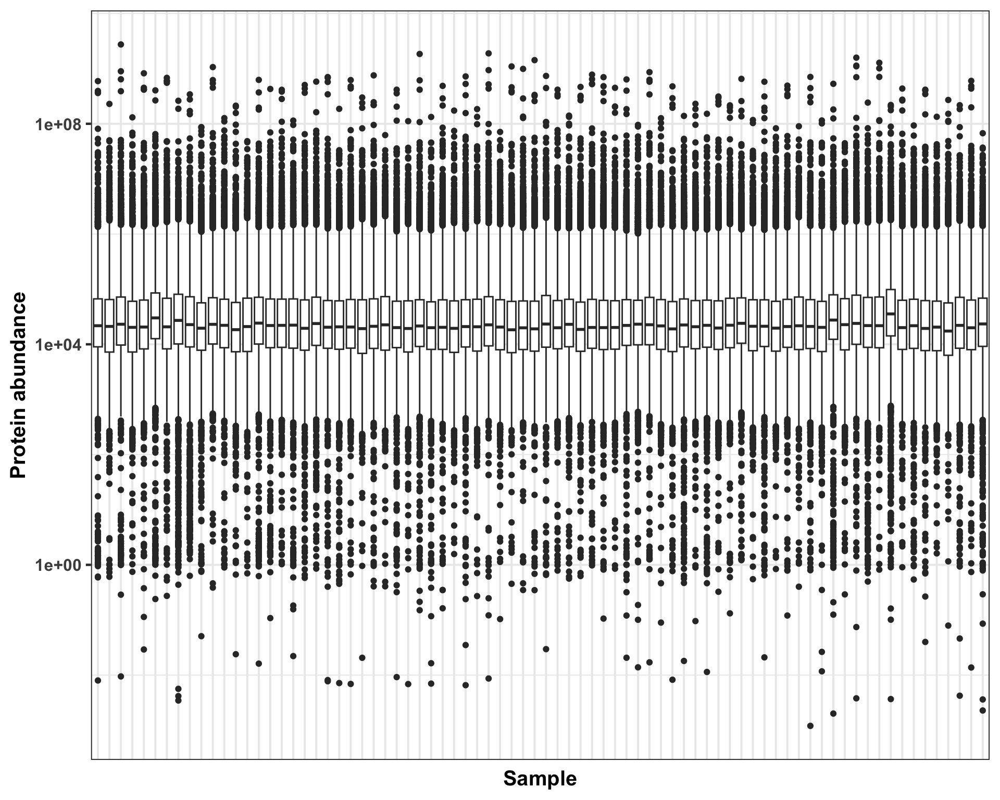
Remove features quantified in less than 2/3 of samples for more reliable data normalization
# Remove features quantified in less than 2/3 of samples
rmFeats <- dplyr::group_by(proTissueTab_Klin, PG.ProteinGroups) %>%
# Compute proportion of observed data points of each group
dplyr::summarise(frac_nonNA = round(sum(!is.na(Abundance)) / length(Abundance), 2)) %>%
dplyr::ungroup() %>%
# Keep proteins observed in less than 2/3 of samples of groups
dplyr::filter(frac_nonNA < 0.67) %>%
dplyr::pull(PG.ProteinGroups)
proTissueTab_Klin <- dplyr::filter(proTissueTab_Klin, !PG.ProteinGroups %in% rmFeats)
# Convert long data to SE object
proTissue_Klin <- df2SummExp(proTissueTab_Klin, row_id = 'PG.ProteinGroups', col_id = 'Sample',
values = 'Abundance', row_anno = c('PG.Genes'),
col_anno = c(anno, 'Adjuvant', 'Batch'))# Remove features quantified in less than 2/3 of samples in sample groups of interest (Normal/Tumor)
# Remove features quantified in less than 2/3 of samples in all sample groups of interest
rmFeats <- dplyr::group_by(proTissueTab_Klin, PG.ProteinGroups, Condition) %>%
dplyr::summarise(frac_nonNA = round(sum(!is.na(Abundance)) / length(Abundance), 2)) %>%
dplyr::ungroup() %>%
dplyr::filter(frac_nonNA < 0.67) %>%
dplyr::group_by(PG.ProteinGroups) %>%
dplyr::summarise(Count = length(PG.ProteinGroups)) %>%
dplyr::filter(Count == 2) %>%
dplyr::pull(PG.ProteinGroups)
proTissueTab_Klin <- dplyr::filter(proTissueTab_Klin, !PG.ProteinGroups %in% rmFeats)
# Convert long data to SE object
proTissue_Klin <- df2SummExp(proTissueTab_Klin, row_id = 'PG.ProteinGroups', col_id = 'Sample',
values = 'Abundance', row_anno = c('PG.Genes'),
col_anno = c(anno, 'Adjuvant', 'Batch'))
# Got 8257 features after filteringDisplay dimensions of filtered data (78 samples and 7693 features)
dim(proTissue_Klin)[1] 7693 78Display data missingness
exprMat <- SummarizedExperiment::assay(proTissue_Klin)
visdat::vis_miss(exprMat, cluster = T, sort_miss = T) +
labs(y = 'Features') +
theme(axis.text.x = element_text(angle = 90, vjust = 0.5, hjust = 0, size = 10, face = 'bold'),
axis.text.y = element_blank(),
axis.title.y = element_text(size = 13, face = 'bold'),
legend.text = element_text(size = 12, face = 'bold'))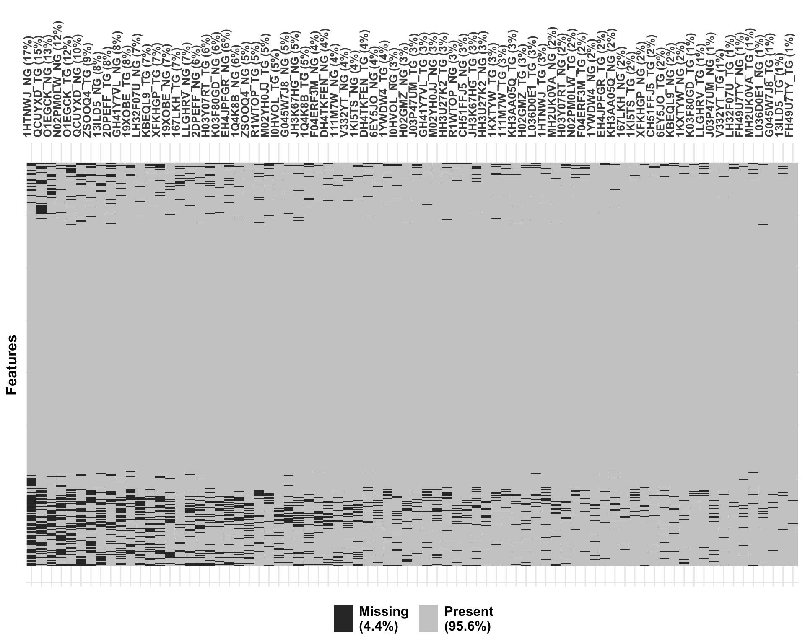
Display distribution of filtered data
ggplot(proTissueTab_Klin, aes(x=Sample, y=Abundance)) +
geom_boxplot() +
scale_y_log10() +
labs(y = 'Protein abundance') +
th + theme(axis.text.x = element_blank(), axis.ticks.x = element_blank())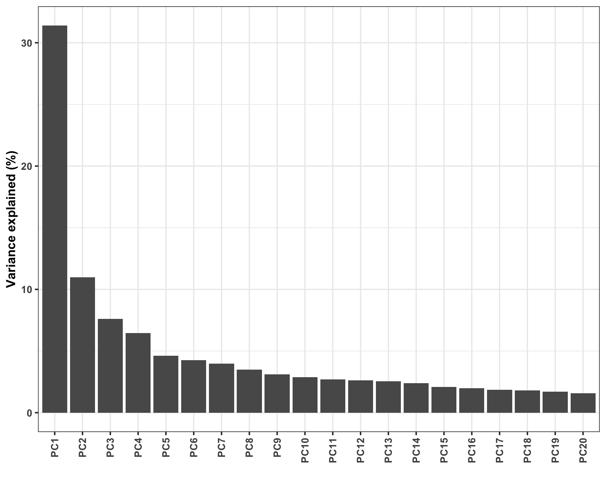
| Version | Author | Date |
|---|---|---|
| 389d24e | LiaoQianWu | 2023-06-28 |
Perform VSN and display distribution of normalized data
# Perform VSN
exprMat <- as.matrix(SummarizedExperiment::assay(proTissue_Klin))
fit <- vsnMatrix(exprMat)
proTissueNorm_Klin <- proTissue_Klin
SummarizedExperiment::assay(proTissueNorm_Klin) <- predict(fit, exprMat)
# Save normalized data
# saveRDS(proTissueNorm_Klin, './data/AG_Klingmuller/proTissueNorm_DIA.rds')
# Convert SE object to long data for plotting
proTissueTabNorm_Klin <- summExp2df(proTissueNorm_Klin, assay = 'Abundance',
row_id = 'Feature', col_id = 'Sample')
ggplot(proTissueTabNorm_Klin, aes(x=Sample, y=Value)) +
geom_boxplot() +
labs(y = 'Normalized protein abundance') +
th + theme(axis.text.x = element_blank(), axis.ticks.x = element_blank())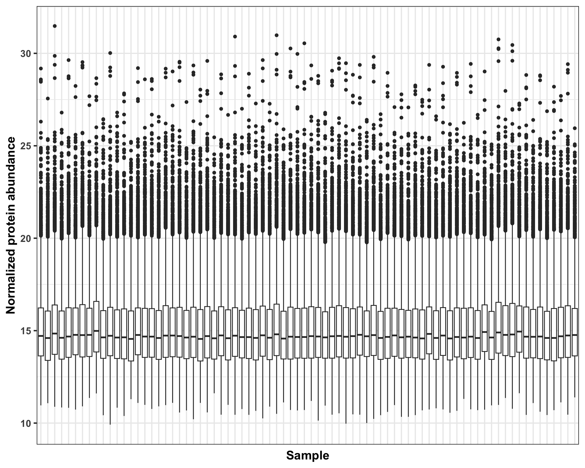
| Version | Author | Date |
|---|---|---|
| 389d24e | LiaoQianWu | 2023-06-28 |
Display significant associations between learned PCs (Var1) and tissue conditions or batches (Var2)
# Perform PCA
proTissueRes_Klin <- doSOA(proTissueNorm_Klin, meta_var = c('Condition', 'Batch'),
pca_method = 'ppca', num_PCs = 20, do_onlyPCA = T)
pcaRes <- proTissueRes_Klin$pcaRes
pcTab <- proTissueRes_Klin$pcTab
# Display PCs of interest
proTissueRes_Klin$tPCASigRes Var1 Var2 pVal pValAdj Stat Test
1 PC1 Condition 3.105032e-32 1.242013e-30 20.163466 T-test
2 PC2 Batch 1.564300e-02 2.713774e-01 2.472730 T-test
3 PC10 Batch 2.211786e-02 2.713774e-01 -2.336220 T-test
4 PC12 Batch 2.713774e-02 2.713774e-01 -2.253092 T-test
5 PC4 Batch 4.094235e-02 3.275388e-01 2.079520 T-testDisplay variance explained by each PC
# Display proportion of total variance captured by all PCs explained by each PC
varExplained <- pcaRes@sDev^2 / sum(pcaRes@sDev^2)
PC <- paste0('PC', seq(length(varExplained)))
varTab <- data.frame(PC = factor(PC, levels = PC),
Var_explained = varExplained)
ggplot(varTab, aes(x=PC, y=Var_explained*100)) +
geom_col() +
labs(x = '', y = 'Variance explained (%)') +
th + theme(axis.text.x = element_text(angle = 90, hjust = 1, vjust = 0.5))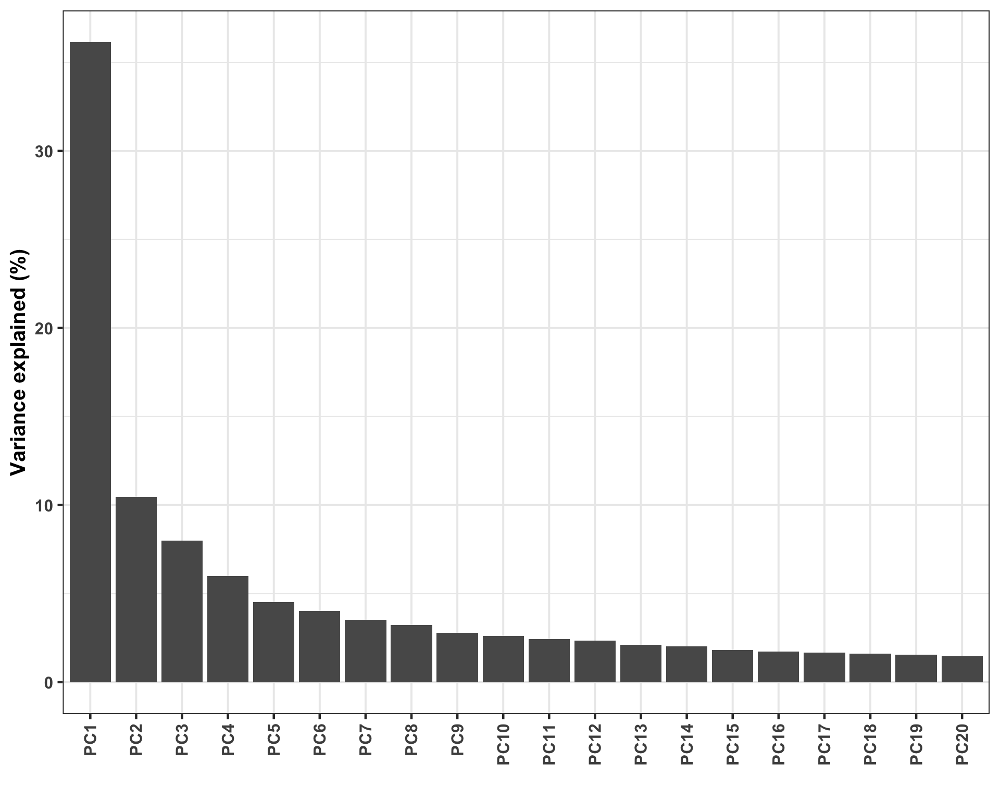
Visualize some significant PCs
Outlier in Tumor group is Patient I0HVOL
ggplot(pcTab, aes(x=Condition, y=PC1, col=Condition, fill=Condition)) +
geom_boxplot(alpha = 0.3, outlier.shape = NA) +
geom_jitter(position = position_jitter(0.2), size = 2, show.legend = F) +
ggpubr::stat_compare_means(method = 't.test', paired = F,
method.args = list(var.equal = T),
show.legend = F) +
th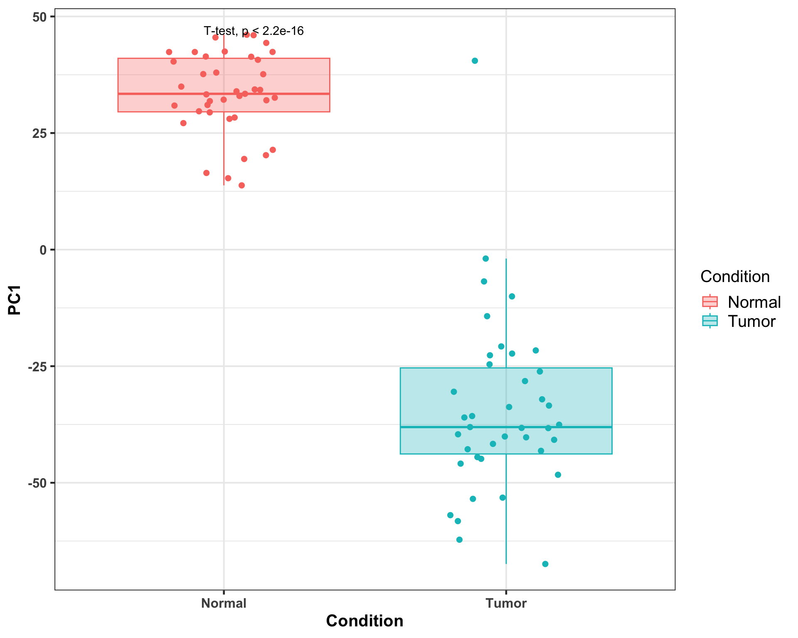
ggplot(pcTab, aes(x=Batch, y=PC8, col=Batch, fill=Batch)) +
geom_boxplot(alpha = 0.3, outlier.shape = NA) +
geom_jitter(position = position_jitter(0.2), size = 2, show.legend = F) +
ggpubr::stat_compare_means(method = 't.test', paired = F,
method.args = list(var.equal = T),
show.legend = F) +
th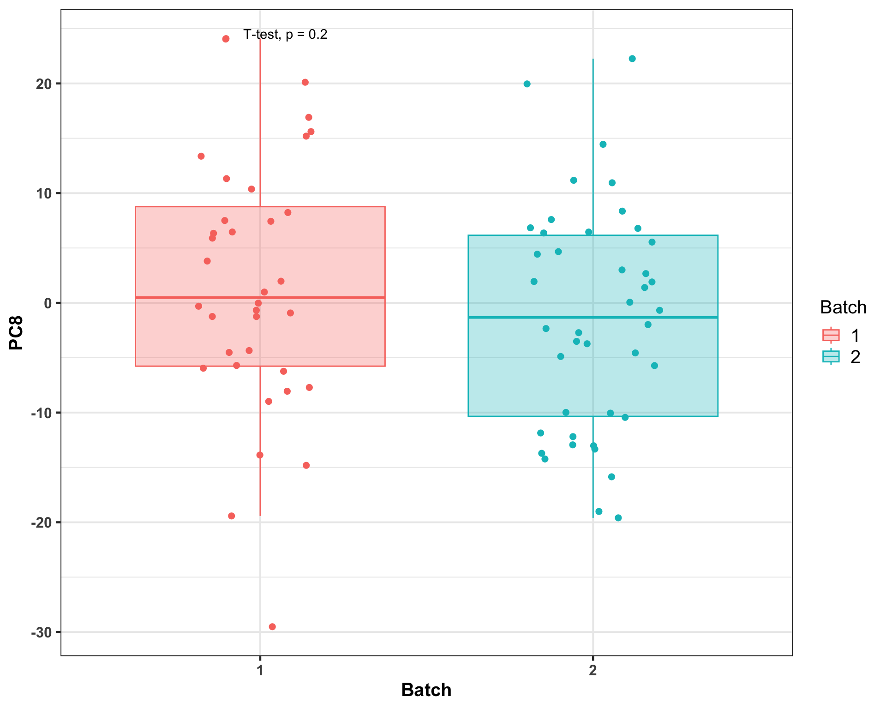
ggplot(pcTab, aes(x=Batch, y=PC2, col=Batch, fill=Batch)) +
geom_boxplot(alpha = 0.3, outlier.shape = NA) +
geom_jitter(position = position_jitter(0.2), size = 2, show.legend = F) +
ggpubr::stat_compare_means(method = 't.test', paired = F,
method.args = list(var.equal = T),
show.legend = F) +
th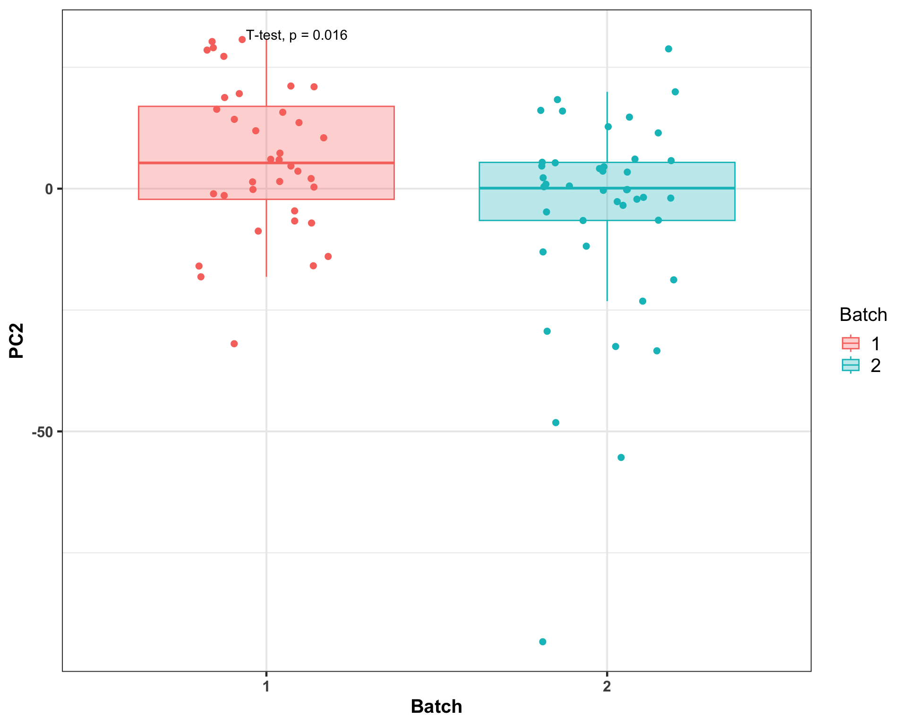
ggplot(pcTab, aes(x=PC2, y=PC8, col=Batch, group=Patient)) +
geom_point(size = 4) +
geom_line(col = 'grey50', linetype = 'dashed') +
th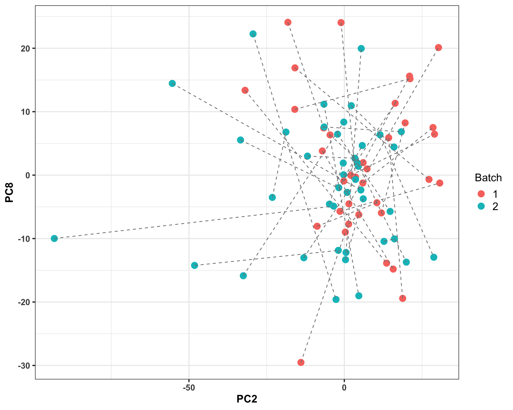 => There is slight batch effect between Method Development and Discovery samples. However, for current data analysis (single- and multi-omics), Discovery samples are excluded, so batch correction is not going to be performed yet.
# Store median normalized data for computing log2(FC)
exprMat <- as.matrix(assay(proTissue_Klin))
sampleAnno <- tibble::as_tibble(colData(proTissue_Klin), rownames = 'Sample')
featAnno <- tibble::as_tibble(rowData(proTissue_Klin), rownames = 'Feature')
proTissueMediTab_Klin <- limma::normalizeBetweenArrays(exprMat, method = 'scale') %>%
tibble::as_tibble(rownames = 'Feature') %>%
tidyr::pivot_longer(cols = -'Feature',
names_to = 'Sample',
values_to = 'mediAbundance') %>%
dplyr::mutate(mediAbundance = log2(mediAbundance)) %>%
dplyr::left_join(sampleAnno, by = 'Sample') %>%
dplyr::left_join(featAnno, by = 'Feature')
ggplot(proTissueMediTab_Klin, aes(x=Sample, y=mediAbundance)) +
geom_boxplot() +
th + theme(axis.text.x = element_blank(), axis.ticks.x = element_blank())
proTissueMedi_Klin <- df2SummExp(proTissueMediTab_Klin, row_id = 'Feature', col_id = 'Sample',
values = 'mediAbundance', row_anno = c('PG.Genes'),
col_anno = c(anno, 'Adjuvant', 'Batch'))
# saveRDS(proTissueMedi_Klin, './data/AG_Klingmuller/proTissueMedi_DIA.rds')
sessionInfo()R version 4.3.0 (2023-04-21)
Platform: aarch64-apple-darwin20 (64-bit)
Running under: macOS Ventura 13.4
Matrix products: default
BLAS: /Library/Frameworks/R.framework/Versions/4.3-arm64/Resources/lib/libRblas.0.dylib
LAPACK: /Library/Frameworks/R.framework/Versions/4.3-arm64/Resources/lib/libRlapack.dylib; LAPACK version 3.11.0
locale:
[1] en_US.UTF-8/en_US.UTF-8/en_US.UTF-8/C/en_US.UTF-8/en_US.UTF-8
time zone: Europe/Berlin
tzcode source: internal
attached base packages:
[1] stats4 stats graphics grDevices utils datasets methods
[8] base
other attached packages:
[1] lubridate_1.9.2 forcats_1.0.0
[3] stringr_1.5.0 dplyr_1.1.2
[5] purrr_1.0.1 tidyr_1.3.0
[7] tibble_3.2.1 ggplot2_3.4.2
[9] tidyverse_2.0.0 SummarizedExperiment_1.30.2
[11] GenomicRanges_1.52.0 GenomeInfoDb_1.36.1
[13] IRanges_2.34.1 S4Vectors_0.38.1
[15] MatrixGenerics_1.12.2 matrixStats_1.0.0
[17] visdat_0.6.0 vsn_3.68.0
[19] Biobase_2.60.0 BiocGenerics_0.46.0
[21] readxl_1.4.3 readr_2.1.4
[23] workflowr_1.7.0
loaded via a namespace (and not attached):
[1] bitops_1.0-7 rlang_1.1.1 magrittr_2.0.3
[4] git2r_0.32.0 compiler_4.3.0 getPass_0.2-2
[7] callr_3.7.3 vctrs_0.6.3 pkgconfig_2.0.3
[10] crayon_1.5.2 fastmap_1.1.1 backports_1.4.1
[13] XVector_0.40.0 labeling_0.4.2 utf8_1.2.3
[16] promises_1.2.0.1 rmarkdown_2.23 tzdb_0.4.0
[19] ps_1.7.5 preprocessCore_1.62.1 bit_4.0.5
[22] xfun_0.39 zlibbioc_1.46.0 cachem_1.0.8
[25] jsonlite_1.8.7 highr_0.10 later_1.3.1
[28] DelayedArray_0.26.6 broom_1.0.5 parallel_4.3.0
[31] R6_2.5.1 bslib_0.5.0 stringi_1.7.12
[34] limma_3.56.2 car_3.1-2 jquerylib_0.1.4
[37] cellranger_1.1.0 Rcpp_1.0.11 knitr_1.43
[40] httpuv_1.6.11 Matrix_1.6-0 timechange_0.2.0
[43] tidyselect_1.2.0 abind_1.4-5 rstudioapi_0.15.0
[46] yaml_2.3.7 affy_1.78.1 processx_3.8.2
[49] lattice_0.21-8 withr_2.5.0 evaluate_0.21
[52] pillar_1.9.0 affyio_1.70.0 BiocManager_1.30.21
[55] ggpubr_0.6.0 carData_3.0-5 whisker_0.4.1
[58] generics_0.1.3 vroom_1.6.3 rprojroot_2.0.3
[61] RCurl_1.98-1.12 hms_1.1.3 munsell_0.5.0
[64] scales_1.2.1 glue_1.6.2 tools_4.3.0
[67] ggsignif_0.6.4 fs_1.6.2 grid_4.3.0
[70] colorspace_2.1-0 GenomeInfoDbData_1.2.10 cli_3.6.1
[73] fansi_1.0.4 S4Arrays_1.0.4 pcaMethods_1.92.0
[76] gtable_0.3.3 rstatix_0.7.2 sass_0.4.7
[79] digest_0.6.33 farver_2.1.1 htmltools_0.5.5
[82] lifecycle_1.0.3 httr_1.4.6 bit64_4.0.5